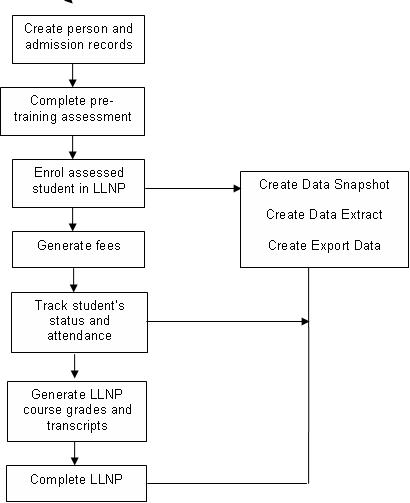

Overview
The Banner Language, Literacy and Numeracy Program (LLNP) provides language, literacy and numeracy training for eligible clients. The Department of Education, Employment and Workplace Relations (DEEWR) manages LLNP.
Functions and features
The LLNP module draws information from Banner LLNP tables and pages, in addition to the tables and pages added specifically for the LLNP functionality.
The LLNP module is made up of various steps and processes. These are organised as follows:
- Set up the LLNP Module: Procedures and pages are used to define elements, values, and processes that are required to produce the LLNP extract.
- Collect and Record Data: Supplemental procedures and pages are used to enter and review any data required for LLNP compliance that might not have already been entered elsewhere in Banner.
- Create the Return: Extract and Report Generation procedures and pages are used to create and view the data snapshot and extract. This step has three stages: snapshot process, extract process, and export process.
- View Data: The Process Rules Engine Universal Viewer is used to view the data produced by the snapshot and extract processes.
Although the LLNP reporting software is delivered with defaulted configuration, many of the functions and processes can be tailored to your institution. For example, if the institution records each LLNP assessment as a separate unit or module, instead of using gradable components from Electronic Gradebook, this can be remapped so the LLNP extract will refer to the grade codes instead of the component marks.
System parameters
A set of default system parameters is delivered with the LLNP module. These parameters are used to configure the LLNP system.
Use the Report System Parameters (SKARSYS) page to configure this data to the specifics of your implementation. Appropriate permissions are required to modify these forms. Refer to the System Parameters section for details on these parameters.
LLNP Pre-training Process
The LLNP Pre-training Process allows you to evaluate whether an applicant is entitled to undertake the LLNP program and to determine the appropriate training stream.
About this task
- Reading
- Writing
- Numeracy
- Oral Communication
- LearningNote: Each skill is given a score between 0 and 5 or can be given a score of NYA, which is not a numeric score. Therefore, the score of 0 indicates that the skill is not yet achieved.
With this process, you will be able to perform the following functions:
Procedure
- Conduct pre-training assessment for students
- Record each applicant’s scores
- Organise assessed students into appropriate LLNP streams
- Calculate automated decisions based on the user-defined rules.
Results
For more information, including details about building automated decision rules, see Chapter 10, “Admissions,” of the Student User Guide.
Processing data collection
This release provides data reporting and extract functionality to meet the requirements for LLNP Reporting.
The LLNP module uses rule sets in the Banner Mass Data Update Utility (MDUU) to generate the snapshot, extract, and export files for the return. We have delivered seed data to enable you to begin designing your return process.
To understand how the returns are built, you must understand the process, task, and activity elements of MDUU. Refer to the Banner Mass Data Update Utility Use for a complete explanation of tasks and activities, and how these elements work to support LLNP reporting requirements.
This document uses the following key terms.
- Process: This represents a set of tasks sharing a common business area. The MDUU security allows you to associate users and user classes to a given process. If this functionality is activated, only users assigned to a given process will be able to execute this process.
- Task: This is a set of activities that is carried out as part of a process, such as taking a snapshot of data from the original data sources and gathering them in more synthetic (eventually generated) tables.
- Activity: This is a processing element that is carried out as part of a task, such as a data copy, or a data transformation. An activity updates a single table and can be reused in several tasks.
The typical top-level process flow for LLNP reporting is shown in Figure 1.

Snapshot processing
This process populates snapshot data from baseline tables, but could also be configured to use ASC tables, locally developed tables, and tables from third-party applications.
The process allows selected target tables in the snapshot data structure to be populated. It has the capability to refresh (remove and insert) or update (add new rows and update existing rows) the snapshot.
The structure of the snapshot tables is maintained by the MDUU under a schema called MDUUREP. (Refer to the Banner Mass Data Update Utility Use for more information.)
When running the snapshot, you can select which snapshot tables to populate. You can also purge the selected snapshot tables before re-inserting rows.
- Create snapshot data
- Define the column mappings for the snapshot
- Define the rules to generate the snapshot population
- Initialise the snapshot
- Populate the snapshot
- Increment the snapshot (add or remove records without refreshing the snapshot from scratch).
Extract processing
This process populates the extract based on snapshot data and, where necessary, it transforms the snapshot data into the format needed for the extract.
The process allows selected target tables in the extract data structure to be populated. It has the capability to refresh (remove and insert) or update (add new rows and update existing rows) the extract.
- Create extract data
- Define the column mappings for the extract
- Define the rules to generate the extract population
- Use expressions and functions to derive values based on the contents of the snapshot
- Initialise the extract
- Populate the extract
- Increment the extract (add or remove records without refreshing the cohort from scratch).
Export processing
This process populates the export based on extract data. The process allows selected target tables in the export data structure to be populated. It has the capability to refresh (remove and insert) or update (add new rows and update existing rows) the export.
- Create export data
- Define the mappings for the CLOB export column
- Define the rules to generate the export population
- Initialise the export
- Populate the export
- Increment the export (add and remove records without refreshing the cohort from scratch)
- View the export
- Create a text file from the export data.
File details
This section provides information about the files generated for LLNP.
- LLNP Enrolments File
- LLNP Status Changes File
- LLNP Completions File
LLNP Enrolments File
The following table describes the activities for this file.
| Activity Type | Activity Name | Description |
|---|---|---|
| Snapshot |
|
This activity pulls data from several baseline tables to select the students enrolled in LLNP programs, for an effective term. The activity populates the LLNP Enrolments Data Snapshot (SKRSLLE) table and uses PIDM, Program Code, CRN, Component ID, and Effective Term as populate keys. |
| Extract |
|
This activity pulls data from the LLNP Enrolments Data Snapshot (SKRSLLE) table to populate the LLNP Enrolments Data Extract (SKRELLE) table. The activity uses PIDM, Program Code, CRN, Component ID, and Effective Term as populate keys. |
| Export |
|
This activity pulls data from the LLNP Enrolments Data Extract (SKRELLE) table to populate the LLNP Enrolments Data Export (SKRXLLE) table. This activity pulls all the data elements into one CLOB field per record, and also contains an Effective Term field, so that several data returns can be kept in the same table. |
LLNP Status Changes File
The following table describes the activities for this file.
| Activity Type | Activity Name | Description |
|---|---|---|
| Snapshot |
|
This activity pulls data from several Banner baseline tables to select students in LLNP programs who have enrolment status codes that are not “EL”. The activity populates the LLNP Status Data Snapshot (SKRSLLS) table and uses PIDM, Program Code, CRN, Component ID, and Effective Term as populate keys. |
| Extract |
|
This activity pulls data from the LLNP Status Data Snapshot (SKRSLLS) table to populate the LLNP Status Data Extract (SKRELLS) table. The activity uses PIDM, Program Code, CRN, Component ID, and Effective Term as populate keys. |
| Export |
|
This activity pulls data from the LLNP Status Data Extract (SKRELLS) table to populate the LLNP Status Data Export (SKRXLLS) table. This activity pulls all the data elements into one CLOB field per record, and also contains an Effective Term field, so that several data returns can be kept in the same table. |
LLNP Completions File
The following table describes the activities for this file.
| Activity Type | Activity Name | Description |
|---|---|---|
| Snapshot |
|
This activity pulls data from several Banner baseline tables to select students who have completed LLNP programs. The activity populates the LLNP Completions Data Snapshot Table (SKRSLLC) and uses PIDM, Program Code, CRN, Component ID, Degree Sequence Number, and Effective Term as populate keys. |
| Extract |
|
This activity pulls data from the LLNP Completions Data Snapshot Table (SKRSLLC) to populate the LLNP Completions Data Extract Table (SKRELLC). The activity uses PIDM, Program Code, CRN, Component ID, Degree Sequence Number, and Effective Term as populate keys. |
| Export |
|
This activity pulls data from the LLNP Completions Data Extract Table (SKRELLC) to populate the LLNP Completions Data Export Table (SKRXLLC). This activity pulls all the data elements into one CLOB field per record, and also contains an Effective Term field, so that several data returns can be kept in the same table. |
Prerequisites
The minimum required releases for LLNP 8.0.
- Banner General 8.0 or later
- Banner LLNP 8.0 or later
- Banner AVETMISS 8.0 or later
- MDUU 8.0 or later
Procedures
This chapter explains the procedures.
Report Student Enrolments
The ASC_LLNP_REPORTING process code contains snapshot, extract, and export activities for LLNP files.
Procedure
Results
- LLNP Enrolments Data Snapshot (SKRSLLE) table
- LLNP Enrolments Data Extract (SKRELLE) table
- LLNP Enrolments Data Export (SKRXLLE) table
Report Student Status Changes
About this task
Procedure
Results
- LLNP Status Data Snapshot (SKRSLLS) table
- LLNP Status Data Extract (SKRELLS) table
- LLNP Status Data Export (SKRXLLS) table
Report Student Completions
About this task
Procedure
Results
- LLNP Completions Data Snapshot (SKRSLLC) table
- LLNP Completions Data Extract (SKRELLC) table
- LLNP Completions Data Export (SKRXLLC) table
Create Flat File Returns
The final stage of LLNP reporting is to export the data to an external document. This process allows you to export the extract data to a flat file document.
About this task
Procedure
- Access the Universal Viewer (GKAPUNV) page.
- Enter the seven-character name of the export table (for example, SKRXLLE) in the Table Name field.
- Use the Filter Column and Filter Value fields to filter the data (for example, you can filter for a particular academic year or term).
- Select Next Block.
- Double-click in any cell of the CLOB column.
- Enter the name of the directory to which the file will be exported in the Directory Name field.
- Enter the name of the exported flat file in the Filename field, ensuring that the file extension is .txt.
- Click the Export Column Data button.
System Parameters
The following table details the system parameters that are available from the SKARSYS page.
| Name | Default Value | Description |
|---|---|---|
|
LLNP-INIT, LLNP-BASIC, LLNP-ADV | Indicates the cohort code(s) used to assist in identifying LLNP students. |
|
Indicates the program code(s) used to assist in identifying LLNP students. |